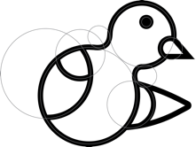
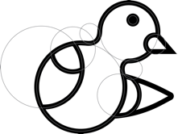

The Pigeon Podcast App is a personal project. A self-imposed challenge to design a better podcasting app than the one that I currently use (Pocket Casts), an app that I consider very well designed and therefore the challenge to bring it to the next level.
Logo Design
UX Design
UI Design
The main purpose of a podcasting app is to deliver a message, in a similar fashion homing pigeons have the ability to always come back home, making them a great medium for carrying messages. And so without being that much subtle the name Pigeon was chosen for the app.
The logo started as a sketch on paper, that was later scanned and refined in Illustrator. The idea was to make a pigeon using only circles.
 

Because of its personal nature, I decided to design Pigeon as the perfect podcasting app for myself. This means that I’m conducting user research only on me, by noting down every time I have a bad experience with my current podcasting app. This is a slow process as I described above my current podcasting app is extremely well designed. So far this are the features that I’m working on:
Adding podcasts episodes to my playlist without subscribing.
Having a Fake Call mode (In case of forgetting earphones).
I have always been a big fan of album artwork, and thus my style decisions revolved around showcasing up front the artwork that each podcast uses to accompany their content. This decision means that the app will be an eclectic mix of different colors, fonts and design styles. In order to keep it from becoming too overwhelming, the app UI colors and fonts are more inclined to the minimal side to let the art shine.

So far the whole experience has been designed to serve only me, and while this is a good start for a personal project if I want the app to evolve, I need to involve more users. Find out their needs and design features that solve them.
While creating the visual style has been fun and a good exercise. The next step should involve low fidelity wireframes, create prototypes and test them with users. This will show me the areas of the app that need more work and will help improve the overall experience of it.